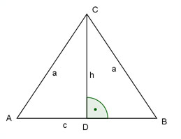

Aufgabe 53 Schenkel und Grundseite eines gleichschenkligen Dreiecks verhalten sich wie 2 : 1. Es hat eine Fläche von 6 cm2. Wie groß ist ein Schenkel und die Grundseite?  a : c = 2 : 1 a 2 --- = --- |*c c 1 a = 2 * c c * h A = ------- |*2 2 2 * A = c * h 2 * 6 = c * h |:c 12 h = ---- c Satz von Pythagoras im Dreieck ADC: c a2 = h2 + (---)2 2 Eingesetzt: 12 c (2c)2 = (----)2 + (---)2 c 2 144 c2 4c2 = ----- + ---- |*4c2 c2 4 16c4 = 576 + c4 | -c4 15c4 = 576 | :15 c4 = 38,4 c = = 2,5 cm a = 2 * 2,5 cm = 5 cm 12 h = ----- = 4,8 cm 2,5